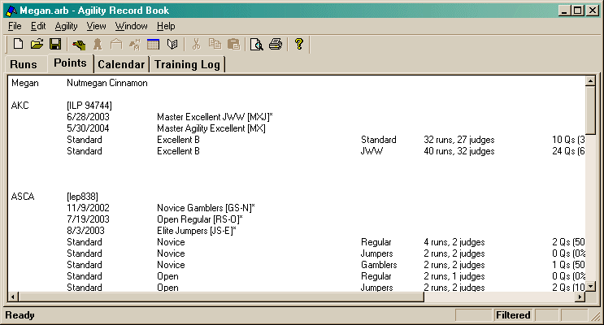

The Points tab is made up of one main window.

This window only presents information to you. There is no context menu or dialogs like in the other tabs. You can adjust what is visible by modifying the filter in the viewing preferences.